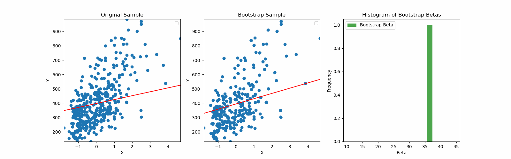
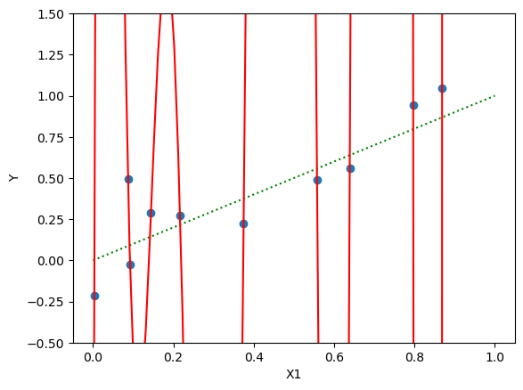
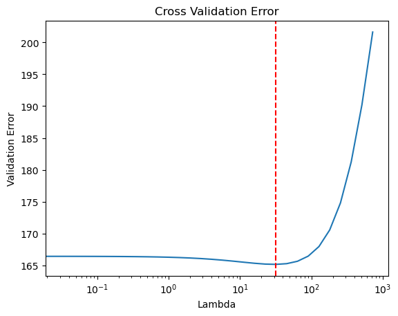

import pandas as pd
import numpy as np
import matplotlib.pyplot as plt
from sklearn.preprocessing import StandardScaler
from sklearn.model_selection import train_test_split
from numpy.linalg import solve
np.random.seed(1)
import warnings
warnings.filterwarnings('ignore')Lecture 3 - Linear Regression
Linear Regression
Housing Dataset
We consider the Kings County housing dataset. It includes homes sold between May 2014 and May 2015.
Specifically, we focuse on the Rainier Valley zipcode.
# Load the dataset
house = pd.read_csv("data/rainier_valley_house.csv")house.columnsIndex(['Unnamed: 0', 'id', 'date', 'price', 'bedrooms', 'bathrooms',
'sqft_living', 'sqft_lot', 'floors', 'waterfront', 'view', 'condition',
'grade', 'sqft_above', 'sqft_basement', 'yr_built', 'yr_renovated',
'zipcode', 'lat', 'long', 'sqft_living15', 'sqft_lot15'],
dtype='object')# We will consider this subset of features
features = ["floors", "grade", "condition", "view", "sqft_living",
"sqft_lot", "sqft_basement", "yr_built", "yr_renovated",
"bedrooms", "bathrooms", "lat", "long"]
house = house[house['price'] < 1e6]
Y = house['price'] / 1000
X = house[features]
## Standardize the features
scaler = StandardScaler()
X_stan = scaler.fit_transform(X)Linear Regression Formula
We compute the regression coefficients using the formula:
\widehat{\beta} = (X^\top X)^{-1}X^\top y
## linear regression
X_stan1 = np.hstack([np.ones((X_stan.shape[0], 1)), X_stan])
X_train, X_test, Y_train, Y_test = train_test_split(X_stan1, Y, test_size=100, train_size=400, random_state=2)
betahat = np.linalg.inv(X_train.T @ X_train) @ (X_train.T @ Y_train)
Y_pred = X_test @ betahat
test_error = np.sqrt(((Y_test - Y_pred) ** 2).mean())
baseline_error = np.sqrt(((Y_test - Y_train.mean()) ** 2).mean())
## print coefficients
print("Coefficients:")
features_list = ['Intercept'] + list(X.columns)
for i, f in enumerate(features_list):
print(f"{f}: {betahat[i]:.3f}")
print(f"Test RMSE of linear regression: {test_error:.3f} Baseline RMSE: {baseline_error:.3f}")
R2 = 1 - test_error**2 / baseline_error**2
print(f"Test R-squared of linear regression: {R2:.3f}")Coefficients:
Intercept: 397.667
floors: 7.706
grade: 44.060
condition: 17.140
view: 27.275
sqft_living: 72.711
sqft_lot: 12.589
sqft_basement: -12.538
yr_built: -13.716
yr_renovated: 2.193
bedrooms: -19.933
bathrooms: 10.003
lat: 70.999
long: 29.816
Test RMSE of linear regression: 84.774 Baseline RMSE: 151.875
Test R-squared of linear regression: 0.688Using statsmodels
We can also use statsmodels to run linear regression for us:
import statsmodels.api as sm
model = sm.OLS(Y_train, X_train)
results = model.fit()results.paramsconst 397.666919
x1 7.705884
x2 44.059690
x3 17.140391
x4 27.274524
x5 72.711224
x6 12.589442
x7 -12.538127
x8 -13.716293
x9 2.192980
x10 -19.933029
x11 10.002684
x12 70.999486
x13 29.815873
dtype: float64coeffs = results.paramsY_pred = results.get_prediction(X_test)
Y_pred = Y_pred.predicted_mean
test_error = np.sqrt(((Y_test - Y_pred) ** 2).mean())
baseline_error = np.sqrt(((Y_test - Y_train.mean()) ** 2).mean())
print(f"Test RMSE of linear regression: {test_error:.3f} Baseline RMSE: {baseline_error:.3f}")
R2 = 1 - test_error**2 / baseline_error**2
print(f"Test R-squared of linear regression: {R2:.3f}")Test RMSE of linear regression: 84.774 Baseline RMSE: 151.875
Test R-squared of linear regression: 0.688Inference
t-tests for coefficients
results.summary()| Dep. Variable: | price | R-squared: | 0.729 |
| Model: | OLS | Adj. R-squared: | 0.720 |
| Method: | Least Squares | F-statistic: | 79.91 |
| Date: | Mon, 02 Mar 2026 | Prob (F-statistic): | 8.70e-101 |
| Time: | 16:16:27 | Log-Likelihood: | -2349.3 |
| No. Observations: | 400 | AIC: | 4727. |
| Df Residuals: | 386 | BIC: | 4783. |
| Df Model: | 13 | ||
| Covariance Type: | nonrobust |
| coef | std err | t | P>|t| | [0.025 | 0.975] | |
| const | 397.6669 | 4.393 | 90.528 | 0.000 | 389.030 | 406.304 |
| x1 | 7.7059 | 6.882 | 1.120 | 0.264 | -5.826 | 21.238 |
| x2 | 44.0597 | 7.045 | 6.254 | 0.000 | 30.209 | 57.911 |
| x3 | 17.1404 | 4.790 | 3.579 | 0.000 | 7.723 | 26.557 |
| x4 | 27.2745 | 4.999 | 5.456 | 0.000 | 17.446 | 37.103 |
| x5 | 72.7112 | 10.910 | 6.665 | 0.000 | 51.261 | 94.161 |
| x6 | 12.5894 | 5.318 | 2.367 | 0.018 | 2.133 | 23.046 |
| x7 | -12.5381 | 7.710 | -1.626 | 0.105 | -27.696 | 2.620 |
| x8 | -13.7163 | 6.625 | -2.070 | 0.039 | -26.742 | -0.690 |
| x9 | 2.1930 | 4.533 | 0.484 | 0.629 | -6.720 | 11.106 |
| x10 | -19.9330 | 6.492 | -3.071 | 0.002 | -32.697 | -7.169 |
| x11 | 10.0027 | 8.088 | 1.237 | 0.217 | -5.899 | 25.904 |
| x12 | 70.9995 | 5.221 | 13.599 | 0.000 | 60.735 | 81.264 |
| x13 | 29.8159 | 5.281 | 5.646 | 0.000 | 19.434 | 40.198 |
| Omnibus: | 26.158 | Durbin-Watson: | 1.973 |
| Prob(Omnibus): | 0.000 | Jarque-Bera (JB): | 65.389 |
| Skew: | 0.285 | Prob(JB): | 6.32e-15 |
| Kurtosis: | 4.897 | Cond. No. | 6.12 |
Notes:
[1] Standard Errors assume that the covariance matrix of the errors is correctly specified.
# Extract confidence intervals from the summary table
conf_int = results.conf_int()Using the bootstrap
Y_train = Y_train.to_numpy()
n_train = X_train.shape[0]
beta = coeffs
n_boot = 1000
bootstrap_inds = [np.random.choice(range(1, n_train), n_train, replace=True) for _ in range(n_boot)]
boot_bhats = np.zeros((n_boot, X_train.shape[1]))
for b in range(n_boot):
X_boot = X_train[bootstrap_inds[b]]
Y_boot = Y_train[bootstrap_inds[b]]
linreg = sm.OLS(Y_boot, X_boot)
boot_result = linreg.fit()
boot_bhats[b, :] = boot_result.params
bins_beta = np.linspace(boot_bhats[:, 4].min(), boot_bhats[:, 4].max(), 20)
plt.figure(figsize=(4,3))
plt.hist(boot_bhats[:, 4], bins=bins_beta, alpha=0.7, color='green', label='Bootstrap Beta')
plt.title('Histogram of Bootstrap Betas')
plt.xlabel('Beta')
plt.ylabel('Frequency')
plt.legend()
beta_sds = np.std(boot_bhats, axis=0)# confidence interval
lower_quantiles = beta - 2 * beta_sds
upper_quantiles = beta + 2 * beta_sds
# Print results
print("95% Bootstrap Confidence Intervals for Coefficients:")
for i, f in enumerate(features_list):
print(f"{f}: ({lower_quantiles[i]:.3f}, {upper_quantiles[i]:.3f})")95% Bootstrap Confidence Intervals for Coefficients:
Intercept: (388.878, 406.456)
floors: (-6.717, 22.129)
grade: (27.224, 60.895)
condition: (7.662, 26.619)
view: (17.276, 37.273)
sqft_living: (48.540, 96.882)
sqft_lot: (-1.782, 26.961)
sqft_basement: (-29.503, 4.427)
yr_built: (-29.000, 1.567)
yr_renovated: (-7.993, 12.379)
bedrooms: (-35.586, -4.280)
bathrooms: (-7.101, 27.106)
lat: (60.028, 81.971)
long: (19.281, 40.350)Overfitting
Example with n=p
## Simulate data from linear model
p = 30
n_train = 30
n_test = 100
n = n_train + n_test
beta_true = 1/np.sqrt(p) * np.ones(p)
X = np.random.normal(size=(n, p))
noise = 0.5 * np.random.normal(size=(n))
Y = X @ beta_true + noise
X_train = X[:n_train, :]
Y_train = Y[:n_train]
X_test = X[n_train:, :]
Y_test = Y[n_train:]
betahat = np.linalg.solve(X_train.T @ X_train, X_train.T @ Y_train)
## print training error
train_error = np.mean((Y_train - X_train @ betahat)**2)
print(f"Training error: {train_error:.2f}")
## print test error
test_error = np.mean((Y_test - X_test @ betahat)**2)
print(f"Test error: {test_error:.2f}")Training error: 0.00
Test error: 8.11Example with polynomials
n = 10
X1 = np.random.uniform(size=(n))
noise = 0.2 * np.random.normal(size=(n))
Y = X1 + noise
## add polynomial of X1
p = 10
X = np.column_stack([X1**i for i in range(0, p+1)])
## fit linear model
betahat = np.linalg.solve(X.T @ X, X.T @ Y)
err = np.sum((Y - X @ betahat)**2)
print(f"Training error: {err:.2f}")
# plot X1, Y
import matplotlib.pyplot as plt
plt.scatter(X1, Y)
plt.xlabel('X1')
plt.ylabel('Y')
X1_grid = np.linspace(0, 1, 100)
# plot truth as dotted
Y_grid = X1_grid
plt.plot(X1_grid, Y_grid, color='green', linestyle='dotted')
# plot fitted curve
X_grid = np.column_stack([X1_grid**i for i in range(0, p+1)])
Y_grid = X_grid @ betahat
plt.ylim(-.5, 1.5)
plt.plot(X1_grid, Y_grid, color='red')
plt.show()Training error: 0.01
Some coefficients are very large:
-np.sort(-betahat) # np.sort is smallest to largest - use negative for largest to smallestarray([ 2.75524984e+07, 7.25216625e+06, 3.51473556e+06, 3.01842642e+05,
1.01149788e+03, -2.54649723e+00, -2.80791410e+04, -7.56886527e+05,
-1.53581036e+06, -1.31515994e+07, -2.31322672e+07])Linear Regression with Ridge Regularization
Ridge regularization shrinks coefficients \beta. The formula is:
\widehat{\beta} = (X^\top X + \lambda \bm{I})^{-1}X^\top y
We now consider a movies dataset where we want to predict revenue from the genre and other features.
# Load the dataset
movies = pd.read_csv("data/movies.csv")
## permute rows
np.random.seed(1)
movies = movies.sample(frac=1).reset_index(drop=True)
## remove rows with 0 revenue
movies = movies[movies['revenue'] > 0]
movies = movies.dropna()
# List of features
features = ["Action", "Crime", "Comedy",
"Adventure", "Drama", "Fantasy", "Music", "Western",
"Science Fiction", "Mystery", "Family", "Horror", "Romance",
"runtime", "budget"]
# Target variable
Y = movies['revenue']/1000000
X = movies[features]
# add interaction between first 10 features and budget
# for feature in features[:10]:
# X[feature + ':budget'] = X[feature] * X['budget']
# features = X.columns
print(f"Number of features: {X.shape[1]}")
# Split the data into test, learning (further divided into train and validation), and training sets
n_learn = 600
n_test = 300
Y_test = Y.iloc[:n_test]
Y_learn = Y.iloc[n_test:n_test+n_learn]
X_test = X.iloc[:n_test, :]
X_learn = X.iloc[n_test:n_test+n_learn, :]
stan_features = ["runtime", "budget"]
stan_mean = X_learn[stan_features].mean(axis=0)
stan_sd = X_learn[stan_features].std(axis=0)
X_stan = X_learn
X_stan[stan_features] = (X_learn[stan_features] - stan_mean) / stan_sd
# Add a column of ones to include the intercept in the model
X_stan = np.hstack([np.ones((X_stan.shape[0], 1)), X_stan])
# Candidate set for lambda
candidate_set = np.concatenate([[0], 2 ** np.arange(-5, 10, .5)])
K = 10
indices = np.arange(n_learn)
folds = indices.reshape(K, -1)
validerr = np.zeros((K, len(candidate_set)))
for k in range(K):
valid_ix = folds[k, :]
train_ix = np.delete(indices, folds[k, :])
X_valid = X_stan[valid_ix, :]
Y_valid = Y_learn.iloc[valid_ix]
X_train = X_stan[train_ix, :]
Y_train = Y_learn.iloc[train_ix]
for j, lambda_val in enumerate(candidate_set):
beta_lambda = solve(X_train.T @ X_train + lambda_val * np.eye(X_train.shape[1]),
X_train.T @ Y_train)
Y_lambda = X_valid @ beta_lambda
validerr[k, j] = np.sqrt(np.mean((Y_valid - Y_lambda) ** 2))
mean_valid_errs = validerr.mean(axis=0)
min_ix = np.argmin(mean_valid_errs)
lambda_best = candidate_set[min_ix]
beta_best = solve(X_stan.T @ X_stan + lambda_best * np.eye(X_stan.shape[1]),
X_stan.T @ Y_learn)
X_test_stan = X_test
X_test_stan[stan_features] = (X_test_stan[stan_features] - stan_mean)/stan_sd
X_test_stan = np.hstack([np.ones((X_test_stan.shape[0], 1)), X_test_stan])
Y_pred = X_test_stan @ beta_best
Y_baseline = Y_learn.mean()
## print coefficients
print("Coefficients: ")
print(f"Intercept: {beta_best[0]:.2f}")
for i in range(len(features)):
print(f"{features[i]}: {beta_best[i+1]:.2f}")
# Evaluate test error
test_error = np.sqrt(np.mean((Y_test - Y_pred) ** 2))
baseline_error = np.sqrt(np.mean((Y_test - Y_baseline) ** 2))
## print errors and R^2 with 2 sig figs
print("Test Error: {:.2f}".format(test_error))
print("Baseline Error: {:.2f}".format(baseline_error))
print("Test R-squared: {:.2f}".format(1 - test_error ** 2 / baseline_error ** 2))
Number of features: 15
Coefficients:
Intercept: 141.06
Action: -2.19
Crime: -9.17
Comedy: 7.34
Adventure: 60.97
Drama: -14.00
Fantasy: 30.55
Music: 0.94
Western: -6.38
Science Fiction: 38.08
Mystery: 4.88
Family: 41.90
Horror: 25.08
Romance: 7.92
runtime: 40.96
budget: 136.16
Test Error: 163.78
Baseline Error: 260.98
Test R-squared: 0.61## plot cross validation errors
import matplotlib.pyplot as plt
plt.plot(candidate_set, mean_valid_errs)
plt.axvline(x=lambda_best, color='r', linestyle='--')
plt.xlabel("Lambda")
plt.ylabel("Validation Error")
plt.title("Cross Validation Error")
plt.xscale('log')
plt.show()